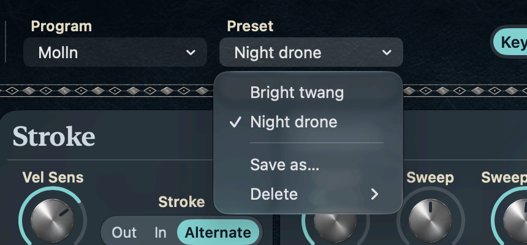
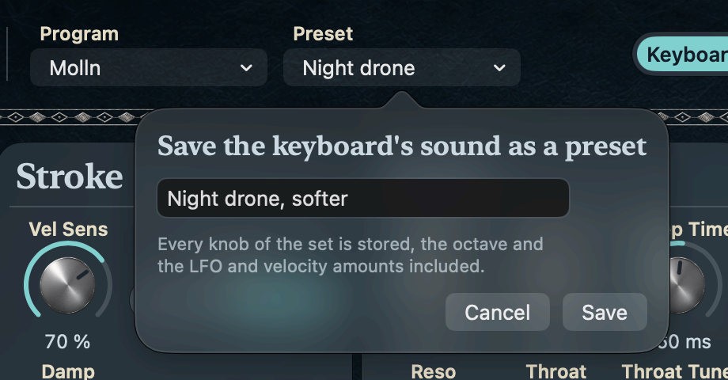
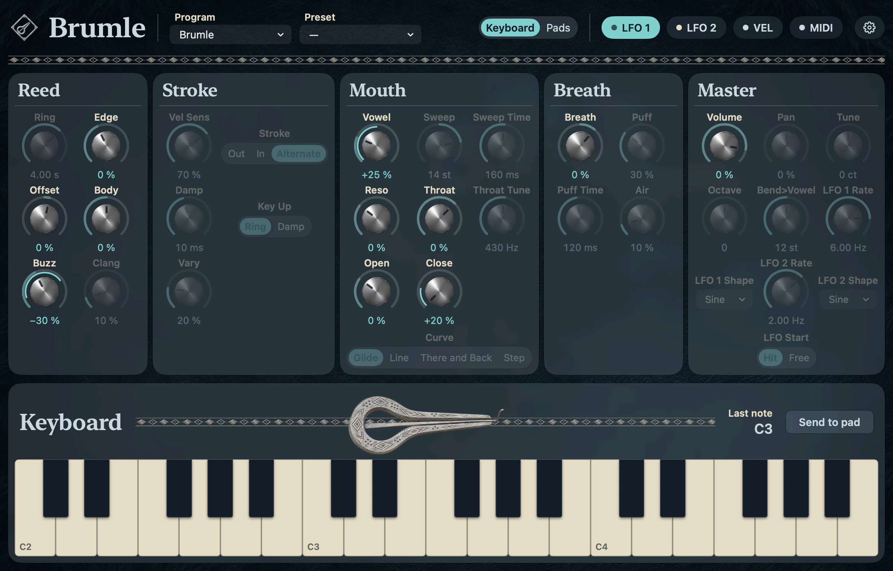

Getting started
- Download the disk image from the download page and open it.
- Drag Fanfrnoch to Applications and start it from there.
- Click a key of the keyboard at the bottom of the window. Near the top of a key the hit is soft, further down it is firmer. A MIDI keyboard plays it too: the app listens to every connected MIDI device until you choose one.
- The sound goes to the macOS output. To choose another device, or one MIDI device or channel, click the gear at the right of the header (Settings; see Settings).
- To play Fanfrnoch in a host such as Logic Pro or Ableton Live, open Settings and click Install Audio Unit (see The Audio Unit plug-in).
The app remembers the sound between launches: the keyboard's knobs, all sixteen pads, the mode, the selected pad and the preset each sound came from. It also keeps your MIDI controllers (see MIDI controllers).
The main window

- 1Program
- Loads one of the seven built-in sounds into the knobs (see The header).
- 2Preset
- Your own sounds, saved as files: load one into the knobs, save the knobs as one, delete one (see Presets).
- 3Keyboard | Pads
- The mode: the keys play one sound at their pitch, or notes 36–51 hit sixteen pads that each hold a sound of their own (see Keyboard mode and Pad mode).
- 4LFO 1, LFO 2, VEL
- Turn the knobs into the amounts by which an LFO or the velocity of a hit moves them (see LFO and VEL amounts).
- 5MIDI
- Shows which MIDI controller moves each knob and switch, and lets them learn new ones (see MIDI controllers).
- 6Settings
- MIDI input, audio output and the Audio Unit installer. Only the app has it.
- 7Reed, Stroke, Mouth, Breath, Master
- The knobs and switches of the sound, in five groups (see Knobs and switches). In keyboard mode they show the keyboard's sound, in pad mode the selected pad's.
- 8Last note
- The last note played in keyboard mode, C2 before any. It is the pitch Send to pad gives a pad.
- 9Send to pad
- Copies the keyboard's sound to one of the pads (see Send to pad).
- 10Keyboard
- Three octaves, C2 to B4. Click a key to play it: at the top of a key the hit has velocity 40, at the bottom 127. Dragging onto another key does not play it. In pad mode the pads take this place.
The header
- Program
- The seven built-in programs. A program sets every knob, switch and amount of the sound the knobs show, except Octave: in keyboard mode the keyboard's sound, in pad mode the selected pad's. The program in use is ticked.
- Fanfrnoch: the defaults, a long ring with the Vowel rising after each pluck.
- Molln: the Alpine jaw harp, a long calm ring with the mouth held still.
- Khomus: the Sakha khomus, buzzing, with a slow turn of the mouth there and back.
- Morsing: the short Indian morsing, a quick twang with a puff of breath and a closing mouth.
- Đàn Môi: the Vietnamese harp, plucked outward only, with an open, airy mouth.
- Bamboo: a thin, bright, clanging bamboo tongue.
- Genggong: the Indonesian genggong, short and clangy, the mouth wide open.
- Preset
- Your presets, the sounds you have saved. Like Program, it works on the sound the knobs show. Its title is the preset that sound came from, or “—” (see Presets).
- Keyboard | Pads
- Switches between the two modes. The switch is not a sound setting: changing it keeps every sound as it is.
- LFO 1, LFO 2, VEL
- One of these three and MIDI can be on at a time. While one of the three is on, the knobs set that source's amounts; click it again to get the knobs back (see LFO and VEL amounts).
- MIDI
- While it is on, every knob and switch of the keyboard's sound shows its MIDI controller instead of its value, and a click makes it learn a new one; click MIDI again to get the values back (see MIDI controllers). The button's secondary-click menu gives every control its standard controller back.
- Settings (the gear)
- Opens Settings. The plug-in's window has no gear: there MIDI and audio come from the host.
When a preset or a kit cannot be saved, loaded or deleted, for example because its file was removed in the Finder or is damaged, a one-line message says so under the Program and Preset menus for four seconds. Nothing else changes.
Knobs and switches
A knob 1 shows its name above it and its value below it; the cyan arc shows where it stands. Drag a knob up or down: 200 points of travel turn it from end to end. Hold Shift while dragging for steps ten times finer. Double-click a knob to take it back to its value in the preset the sound came from or, without one, in the program last loaded. A switch 2 shows its choices side by side; click one. The LFO shapes, which have more choices, are menus.
The ranges and defaults below are those of the program Fanfrnoch.
Reed
The metal tongue and how it strikes the frame.
- Ring (0.3–15 s, default 4 s)
- How long the reed rings after a pluck: the time it takes to fall by 60 dB.
- Edge (3–40, default 18)
- How sharply the reed's tip passes the frame. Higher values reach further up the harmonics and sound brighter and harder.
- Offset (−2 to +2, default +0.2)
- How far the reed sits off the middle of the gap. The further from 0, the stronger the even harmonics.
- Body (−48 to 0 dB, default −24 dB)
- The level of the reed's own tone, the fundamental, under the twang.
- Buzz (0–100 %, default 40 %)
- The raw buzz of the reed passing the frame, mixed in beside the mouth's resonances. More Buzz is rawer; less lets the mouth speak.
- Clang (0–100 %, default 10 %)
- The metallic clang at the start of a hard pluck, which dies within a few tens of milliseconds.
Stroke
How the finger plucks the reed and stops it.
- Vel Sens (0–100 %, default 70 %)
- How much the velocity changes the stroke itself. A softer hit swings the reed less, by 1 − Vel Sens × (1 − velocity), and its puff of breath with it, so it is quieter, darker and less breathy. At 0 every hit is as strong as the hardest.
- Stroke (Out, In, Alternate; default Alternate)
- The direction of the pluck. Alternate changes direction from one pluck to the next: per note in keyboard mode, per mute group in pad mode (see Pad mode).
- Damp (2–80 ms, default 10 ms)
- How fast a ringing reed is stopped: the time it takes to fall by 40 dB. A reed is stopped when its note is struck again, when a pad of its mute group is hit, and on Key Up = Damp.
- Key Up (Ring, Damp; default Ring)
- What letting go of a key or a pad does. Ring lets the reed ring out; Damp stops it in the Damp time.
- Vary (0–100 %, default 20 %)
- A random difference between one pluck and the next, as a hand never plucks twice alike. At 100 % the strength of a pluck varies by up to 15 %, the Offset by up to 0.3, the Vowel by up to 3 semitones and the Sweep Time by up to 20 %.
Mouth
The player's mouth, which picks out the overtones that sing. Moving it is what makes the melody of a jaw harp.
- Vowel (500–3300 Hz, default 800 Hz)
- Where the mouth's resonance stands at the pluck: the overtone near this frequency sings out. The pitch bend wheel moves it (see Keyboard mode).
- Sweep (−24 to +24 st, default +14 st)
- How far the mouth moves the Vowel after each pluck, in semitones; negative values move it down.
- Sweep Time (10–2000 ms, default 160 ms)
- How long that movement takes.
- Curve (Glide, Line, There and Back, Step; default Glide)
- The path of the movement. Glide moves fast at first and settles gently; Line moves at an even pace; There and Back goes out and returns to where it started within the Sweep Time; Step jumps halfway through it.
- Reso (4–40, default 15)
- How sharp the mouth's resonance is (its Q). High values pick out a narrower band, so the singing overtone stands out more.
- Throat (−30 to 0 dB, default −10 dB)
- The level of the throat's resonance, a second, lower band beside the Vowel's.
- Throat Tune (250–700 Hz, default 430 Hz)
- Where the throat's resonance stands.
- Open (0–100 %, default 30 %)
- How open the lips are. More open is brighter, and the throat's band grows wider and higher.
- Close (0–100 %, default 0 %)
- How far the lips close: at 100 % the Vowel's resonance is shut. The mod wheel adds to it.
Breath
Air through the instrument, which the reed chops into bursts.
- Breath (−100 to +100 %, default +30 %)
- A steady breath through the gap while the reed rings. Negative values draw the air in, which changes the colour of the buzz. Aftertouch adds to it.
- Puff (0–100 %, default 30 %)
- The burst of breath that comes with each pluck. A softer hit puffs less, as Vel Sens says.
- Puff Time (20–1000 ms, default 120 ms)
- How long that burst lasts.
- Air (0–100 %, default 10 %)
- The hiss of air in the gap. It fades away with the reed.
Master
- Volume (−40 to +6 dB, default 0 dB)
- The level of the sound. The programs are balanced for 0 dB.
- Pan (−100 to +100 %, default 0)
- Left or right in the stereo output. Useful for placing pads apart.
- Tune (−100 to +100 ct, default 0)
- Fine tuning in cents.
- Octave (−2 to +2, default 0)
- Moves the sound by octaves. At 0 a note sounds at its own pitch: C2 (note 36) is 65.4 Hz. Programs leave this knob where it is.
- Bend>Vowel (0–24 st, default 12 st)
- How far the pitch bend wheel moves the Vowel: at the wheel's ends, this many semitones up or down.
- LFO 1 Rate, LFO 2 Rate (0.02–20 Hz, defaults 6 Hz and 2 Hz)
- How often each LFO goes round. What an LFO moves, and how far, is set on the knobs themselves (see LFO and VEL amounts).
- LFO 1 Shape, LFO 2 Shape (Sine, Triangle, Ramp Up, Ramp Down, Square, Steps, Wander; default Sine)
- The shape of each LFO's cycle. Sine and Triangle sway; the ramps rise or fall and jump back; Square switches between two places; Steps takes a new random place every cycle and holds it; Wander takes one and moves there smoothly.
- LFO Start (Hit, Free; default Hit)
- Hit starts both LFOs anew with every hit, so the same hit always moves the knobs the same way. Free lets them run on, and each hit joins them where they are.
Keyboard mode
Every MIDI note, and every key on the screen, plays the keyboard's sound at the note's pitch. That sound is what the knobs show in this mode.
- One voice per note. Striking a note again stops its own ringing reed (in its Damp time) and plucks anew. Different notes ring over each other.
- A ringing note follows the knobs: turn one and you hear the change at once. Ring, Vel Sens, Stroke, Vary, Tune and Octave are the exception; they count from the next hit.
- Sixteen voices sound at most, pads included. A seventeenth hit stops the quietest voice within a few milliseconds.
- Velocity
- Shapes the stroke as Vel Sens says, and moves the knobs that have a VEL amount (see LFO and VEL amounts).
- Pitch bend
- Moves the Vowel, not the pitch: by up to Bend>Vowel semitones either way.
- Mod wheel (CC 1)
- Closes the lips: adds up to the whole travel of Close.
- Aftertouch (channel pressure)
- Adds breath: up to half the travel of Breath.
The wheels act on the keyboard's sound only; ringing pads do not follow them. Reset All Controllers (CC 121) puts all three back to rest, and All Notes Off (CC 123) stops every voice in its Damp time.
Other MIDI controllers turn the knobs and switches themselves (see MIDI controllers).
Pad mode

In pad mode 5 the MIDI notes 36–51 (C2–D♯3) hit pads 1–16: note 36 is pad 1, note 37 pad 2, and so on, as on an MPC or in an Ableton Drum Rack. Other notes are ignored. Each pad holds a sound of its own, frozen with it, and plays it at a pitch of its own, whatever note hits it.
- 1The pads
- Pad 1 is at the top left and the pads run row by row. Each shows its number and name above its pitch and its mute group (“C2 G1”; “Off” when it has none). A pad's name is that of the preset its sound came from or, without one, that of its program. A pad lights up when it is hit, from the screen or from MIDI.
- 2Selecting and playing a pad
- Click a pad to play it and select it; the selected pad has a cyan outline. As on the keys, near the top the hit is soft and further down it is firmer. The pad is held until you let go of the mouse button, which matters for Key Up = Damp.
- Editing a pad
- The knobs show the selected pad's sound, and turning them changes that pad only. 4 Program and Preset load into the selected pad. The keyboard's sound is left alone, and so are the other pads.
- 3Pitch and group
- Beside the pads: which pad is selected, its pitch and its mute group (see below), and the Kit menu (see Kits).
A pad's hit uses the pad's sound as it stood at the hit: turning a knob changes the next hit, not one that rings. Pads ring over each other unless their group stops them.
Pitch and group

- 1Selected
- The number and name of the selected pad.
- 2Pitch
- The note the pad plays, from C-1 to G9, chosen in submenus by octave. The pad's Octave and Tune still apply.
- 3Group
- The pad's mute group: Off or 1–16. Pitch and group belong to the pad, not to its sound: loading a program or a preset leaves them alone.
- 4Kit
- Loads, saves and deletes kits: all sixteen pads at once (see Kits).
Mute groups
Mute groups work as on an MPC. A hit stops the ringing reeds of every pad in its group, whatever their pitch, and always its own pad's previous hit. A pad whose group is Off stops only itself, so two such pads at the same pitch ring over each other. Each stopped reed falls in its own Damp time.
With Stroke = Alternate the direction alternates per group: the pads of a group pluck in turn like one harp. A pad with group Off alternates on its own.
The default kit
On the first launch, and in every new plug-in instance, the pads hold this kit; Kit › Default kit brings it back. Pads 1 and 2 are one harp, the second ringing short; pads 9–16 repeat pads 1–8 a fifth higher, groups 1–4 becoming 5–8.
| Pad | Program | Note | Group |
|---|---|---|---|
| 01 | Fanfrnoch | C2 (36) | 1 |
| 02 | Fanfrnoch, Ring 0.6 s | C2 (36) | 1 |
| 03 | Bamboo | D♯2 (39) | Off |
| 04 | Molln | G2 (43) | 2 |
| 05 | Morsing | C3 (48) | 3 |
| 06 | Khomus | D2 (38) | 4 |
| 07 | Đàn Môi | D♯2 (39) | Off |
| 08 | Genggong | F2 (41) | Off |
| 09 | Fanfrnoch | G2 (43) | 5 |
| 10 | Fanfrnoch, Ring 0.6 s | G2 (43) | 5 |
| 11 | Bamboo | A♯2 (46) | Off |
| 12 | Molln | D3 (50) | 6 |
| 13 | Morsing | G3 (55) | 7 |
| 14 | Khomus | A2 (45) | 8 |
| 15 | Đàn Môi | A♯2 (46) | Off |
| 16 | Genggong | C3 (48) | Off |
Send to pad

Send to pad turns a sound made on the keyboard into a pad.
- In keyboard mode, set up the sound and play the note the pad should have. Last note beside the button shows it.
- Click Send to pad. The sixteen pads appear with their names and pitches.
- Click the pad to replace 1. Fanfrnoch asks 2 whether to replace it, naming the pad and the pitch.
- Click Replace (or press Return) to copy; Cancel (or Esc) keeps the pad as it was.
The pad takes every knob, switch and amount of the keyboard's sound, its program, the preset it came from if any, and, as its pitch, the last note played (C2 if none was). It keeps its group.
Presets
A preset is one sound saved as a file: the program it started from and every knob, switch and amount, Octave included. You can load it into the keyboard or into any pad, as often as you like. A pad's pitch and group are not part of it.

- 1The Preset menu
- In the header, beside Program. Its title is the preset the sound the knobs show came from, or “—”. The menu looks into the folder each time it opens, so a preset just saved by the plug-in in a host, or copied into the folder, is there.
- 2Loading a preset
- Click a preset to load it into the sound the knobs show: the keyboard's in keyboard mode, the selected pad's in pad mode. The other sounds stay as they are. The preset in use is ticked.
- 3Save as…
- Saves the sound the knobs show as a preset (see Saving a preset).
- 4Delete
- A submenu of your presets. Fanfrnoch asks “Delete “Night drone”? It goes to the Trash.”: Delete moves the file to the Trash, Cancel (or Return, or Esc) keeps it. A sound that came from the deleted preset keeps its knobs.
Saving a preset

- Set up the sound, then choose Preset › Save as….
- Type a name 1. The field starts with the name of the preset in use, if there is one. Under it Fanfrnoch says what is stored 2.
- Click Save 3 or press Return. Cancel or Esc saves nothing.
A name can have up to 60 characters. Spaces at its ends are dropped, and “/” and “:” become “-”. If a preset of that name exists already (capitals do not count), Fanfrnoch asks “Replace “Night drone”?”: Replace saves over it, Cancel takes you back to the name. Sounds that came from the old version keep their knobs, but a double-click now takes a knob to the new version's value.
The preset in use
Each sound, the keyboard's and every pad's, remembers the preset it came from. The menu's title and its tick show it, a pad shows its name, and a double-click takes a knob back to the preset's value. Turning knobs keeps the link. Loading a program ends it, and the title shows “—” again; so does deleting the preset's file, after which a double-click goes to the program's value.
Where presets are kept
Each preset is a file named after it, with the extension .fanfrnoch, in ~/Library/Application Support/Fanfrnoch/Presets. The app and the plug-in use the same folder, so a preset saved in one is in the other's menu too. You can copy the files to another Mac, or rename them in the Finder. Fanfrnoch makes the folder when you save your first preset.
Kits
A kit is all sixteen pads saved as one file: each pad's sound, pitch and mute group, and the preset each sound came from. Loading a kit replaces all sixteen pads at once; the keyboard's sound and the mode stay as they are.

- 1Kit
- The menu beside the pads, in pad mode. No kit is ticked: once a kit is loaded, its pads are edited one by one.
- 2Your kits
- Click one to load it into the pads. A pad whose preset is still in the Presets folder is linked to it again.
- 3Default kit
- Brings back the kit Fanfrnoch starts with (see The default kit).
- 4Save kit as…
- Saves the sixteen pads as a kit. Naming works as for a preset (see Saving a preset).
- 5Delete kit
- A submenu of your kits. After you confirm, the kit's file goes to the Trash.
Kits are files with the extension .fanfrnochkit in ~/Library/Application Support/Fanfrnoch/Kits, shared by the app and the plug-in like presets.
LFO and VEL amounts
Two LFOs and the velocity of each hit can move the knobs for you. Every knob they can move has an amount for each of them: how far that source moves it, as a part of the knob's travel, from −100 to +100 %. The amounts belong to the sound, like the knobs, so every pad has its own. They all start at 0, in every program.

- Setting an amount
- Click 1 LFO 1, LFO 2 or VEL in the header; the button lights up in its colour (LFO 1 cyan, LFO 2 bone, VEL silver). The knobs now show that source's amounts below them 2: drag a knob up for a positive amount, down for a negative one. An amount within 1 % of zero is zero. Double-click a knob to set its amount back to 0. Click the button again to get the knobs back.
- Seeing it
- A knob a source moves shows a thin arc in that source's colour inside its value arc 3, also when the buttons are off, so you see what is moving. The knob's pointer stays where you put it.
- What steps back
- Knobs and switches a source cannot move are dimmed while its button is on 4.
LFOs
An LFO swings a knob either way from where it stands, by its amount of the knob's travel, and never past the knob's ends. A negative amount turns the movement round. Both LFOs can move the same knob; their movements add up. The LFOs' rates, shapes and start are in Master; with LFO Start = Hit each voice starts its own LFOs with its hit.
The LFOs can move Vowel, Close, Breath, Open, Reso, Throat, Buzz, Body, Volume, Edge and Offset.
VEL

The knob is where a hit at full velocity puts it. A softer hit moves it away by amount × (1 − velocity) of its travel, where velocity runs from 0 to 1 (MIDI 127 is 1). A positive amount means “the harder the hit, the higher the value”: with Ring at +40 %, a hit at half velocity stands the Ring knob 20 % of its travel lower, so soft hits ring shorter. A negative amount works the other way round. The velocity is fixed for the hit; LFO movements add to it.
Volume is the exception. Its VEL amount scales the level instead, by 1 − amount × (1 − velocity): the classic velocity-to-level. At +100 % a hit at half velocity gets half the gain (−6 dB), on top of what Vel Sens does to the stroke; at 0 % the velocity changes the level only through Vel Sens.
The velocity can move Ring, Damp, Edge, Offset, Body, Buzz, Clang, Vary, Vowel, Sweep, Sweep Time, Reso, Throat, Throat Tune, Open, Close, Breath, Puff, Puff Time, Air, Volume, Pan, Tune, LFO 1 Rate and LFO 2 Rate. The switches, Octave, Bend>Vowel and Vel Sens have no VEL amount: Vel Sens is the stroke itself.
MIDI controllers
Every knob and switch of the keyboard's sound can follow a MIDI controller (a CC): a knob, fader or pedal of your MIDI keyboard or controller. Each comes with a standard controller (see the table below), so a controller that sends those numbers works at once, and any of them can learn another.

- 1Showing the controllers
- Click MIDI in the header; it lights up in silver. Each knob shows its controller below it instead of its value 2, and each switch in place of its choices 3: “CC 72”, or “—” for none. Click MIDI again to get the values back.
- 4Learning a controller
- Click a knob or switch: a dashed ring appears and it says “move a control”. Move a knob or fader of your controller: the first controller that moves is taken, and the control goes where that controller stands. Click the control again to stop listening; turning MIDI off, changing the mode, switching to another app or closing the window stops it too.
- The standard controller
- Double-click a knob or switch to give it its standard controller back.
- The secondary-click menu
- Control-click a knob or switch (or click it with two fingers): No controller leaves it without one, Back to CC 72 (its standard number) gives the standard one back. Every control back to its standard controller, in this menu and in the MIDI button's, resets them all.
- One controller moves one control. A controller learnt by one control is taken from the control that had it.
- A controller puts its control where its value says: 0 is the bottom of the travel, 127 the top. On a knob whose middle is 0 (Offset, Sweep, Breath, Pan, Tune, Octave), 64 is exactly the middle. A switch spreads its choices over 0–127.
- Controllers work on every MIDI channel; the app takes them on the channels chosen in Settings.
- Controllers move the keyboard's sound, in pad mode too. The pads and the LFO and VEL amounts have none, so with MIDI on in pad mode the controls are dimmed and show “—”.
- A ringing note follows a controller as it follows a turn of the knob (see Keyboard mode), from its next control step, a few milliseconds later.
- The controllers belong to the app or the plug-in, not to a sound: loading a program, a preset or a kit leaves them alone. The app keeps them in its settings, so they are there after a relaunch. The plug-in keeps them with the host's project, each instance its own.
- In the plug-in, a knob a controller moves is reported to the host as if you had turned it.
The standard controllers
Where General MIDI gives a controller a meaning that fits, the control takes it: Volume 7, Pan 10, Vowel 74 (brightness), Reso 71 (timbre), Ring 72 (release time), Breath 2 (breath controller) and Vel Sens 73 (attack time). The others take numbers that MIDI leaves undefined.
| Control | CC | Control | CC |
|---|---|---|---|
| Ring | 72 | Throat Tune | 27 |
| Edge | 14 | Open | 28 |
| Offset | 15 | Close | 29 |
| Body | 16 | Breath | 2 |
| Buzz | 17 | Puff | 30 |
| Clang | 18 | Puff Time | 31 |
| Vel Sens | 73 | Air | 85 |
| Stroke | 19 | Volume | 7 |
| Damp | 20 | Pan | 10 |
| Key Up | 21 | Tune | 86 |
| Vary | 22 | Octave | 87 |
| Vowel | 74 | Bend>Vowel | 88 |
| Sweep | 23 | LFO Start | 89 |
| Sweep Time | 24 | LFO 1 Rate | 90 |
| Curve | 25 | LFO 1 Shape | 102 |
| Reso | 71 | LFO 2 Rate | 103 |
| Throat | 26 | LFO 2 Shape | 104 |
Reserved controllers. CC 0–1, 6, 32, 38, 64, 96–101 and 120–127 keep their meanings in MIDI (bank select, data entry, sustain, parameter numbers and the channel messages). No control is given one, and learning ignores them. CC 1 is the mod wheel, which moves Close (see Keyboard mode); CC 121 puts the wheels back to rest, and CC 120 and 123 stop every voice.
Free to learn, with no meaning in Fanfrnoch: CC 3–5, 8, 9, 11–13, 33–37, 39–63, 65–70, 75–84, 91–95 and 105–119.
Settings
The gear in the header opens them. They belong to the app; the plug-in takes MIDI and audio from its host.
- MIDI input › Device
- All devices (the default), None, or one connected keyboard or controller. A chosen device that is unplugged stays in the list as “not connected”; the app listens to it again as soon as it is back.
- MIDI input › Channel
- All channels or one of 1–16; messages on other channels are ignored.
- The “Fanfrnoch” MIDI port
- While the app runs, other applications can send MIDI to a port called Fanfrnoch. It obeys the channel setting.
- Audio output › Device
- System default or a specific audio device. System default follows the output chosen in macOS. A chosen device that is unplugged stays in the list as “not connected”, and the sound goes to the system default until it is back.
- Audio output › Channels
- Shown for a device with four or more outputs: the pair of channels the stereo sound goes to.
- Audio Unit plug-in
- Shows whether the plug-in is installed and in which version; Install Audio Unit installs or updates it.
The Audio Unit plug-in
- In the app, open Settings and click Install Audio Unit. This copies Fanfrnoch.component into ~/Library/Audio/Plug-Ins/Components.
- Restart your host or let it rescan its plug-ins.
- The instrument appears as Fanfrnoch by Jiri Pisa among the Audio Unit instruments.
The plug-in's window is the app's, without the gear: the same header, knobs, keyboard, pads and Send to pad. The keys and pads on the screen play the plug-in directly.
- Automation
- The host sees 81 parameters: the keyboard's sound, that is its 34 knobs and switches, 22 LFO amounts and 25 VEL amounts. Turning a knob in keyboard mode can be recorded as automation, and automation moves the knobs. The pads, their pitches and groups and the mode are not parameters: automation reaches the keyboard's sound only.
- Presets
- The seven programs are the plug-in's factory presets; they load into the keyboard's sound. Your own presets are in the window's Preset menu, shared with the app (see Presets). When one is loaded into the keyboard, the host shows its name as the plug-in's preset; choosing a factory preset in the host ends that link.
- Saved with the project
- The keyboard's sound and its program, the mode, all sixteen pads (sound, pitch and group), the preset each sound came from, the MIDI controllers and the selected pad. A pad edit marks the project as changed half a second after you stop, or when you close the window. The plug-in's window opens on the pad selected last. A project saved by an earlier version opens with the standard controllers and pad 01 selected.
- Latency
- Below 88.2 kHz Fanfrnoch runs its voices at twice the host's rate, which delays the sound by 29 samples (0.6 ms at 48 kHz). The plug-in reports this to the host, which compensates. From 88.2 kHz up the latency is 0.
- Output
- Stereo. On a mono track the plug-in mixes both sides into one, so pads panned hard right are still heard.
After updating the app, click Install Audio Unit again to update the plug-in.
Updates
At every launch Fanfrnoch asks whether a newer version exists and, if so, offers it; nothing is installed without your OK. Fanfrnoch › Check for Updates… asks right away.